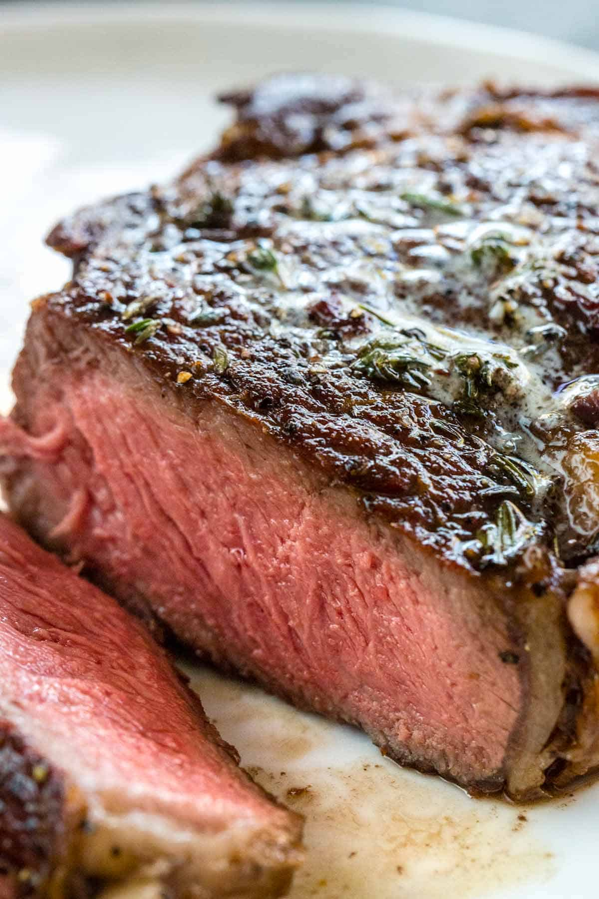

Perfect reverse seared steak

The Reverse Sear
Reverse searing is the method of cooking a perfect steak. It's idea is to first slowly cook the steak to perfect temperature in
oven, and then add the finishing sear in a hot pan. Reverse searing is easy and beginner friedly approach to cooking steak.
Ingredients
- Thermometer
- Big chunck of steak (about 400g)
- Oil
- Salt and pepper to taste
- Butter
- Garlic and some fresh thyme
Steps
-
Prepearing the meat
- First, trim the steak. Remove carefully any silverskin and cut off the excess fat
- Pat the steak dry with a papertowel and coat the steak with salt. Leave the steak at fridge for couple of hours
- Carefully dry the steak once more with papertowel. We want the surface of the steak to be dry as possible
-
Cooking
- Heat the oven at 80 degrees celcius.
- Insert the Thermometer to center of the steak
- Let it cook to desired temperature (refer to this chart)
-
The Sear
- Pat the steak dry once more, the drier the surface the better.
- Get your cast iron skillet hot. Like really hot. The steak is basically cooked, we only want to make the crust in the pan
- You can either coat the steak in oil, or put some oil in the pan
- Sear the steak, when the first side is done, flip the steak
- Add some butter, minced garlic and thyme to the pan
- Use spoon to bathe the steak in garlic butter
- Let the steak rest 5 minutes and enjoy